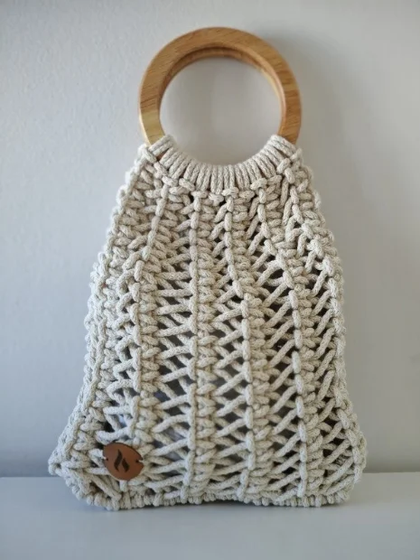
Cartera Nube
Con manija circular de madera.
· Hecho a mano ·
Accesorios y deco en macramé, hechos a mano
Consultar por WhatsApp Descubrir la colección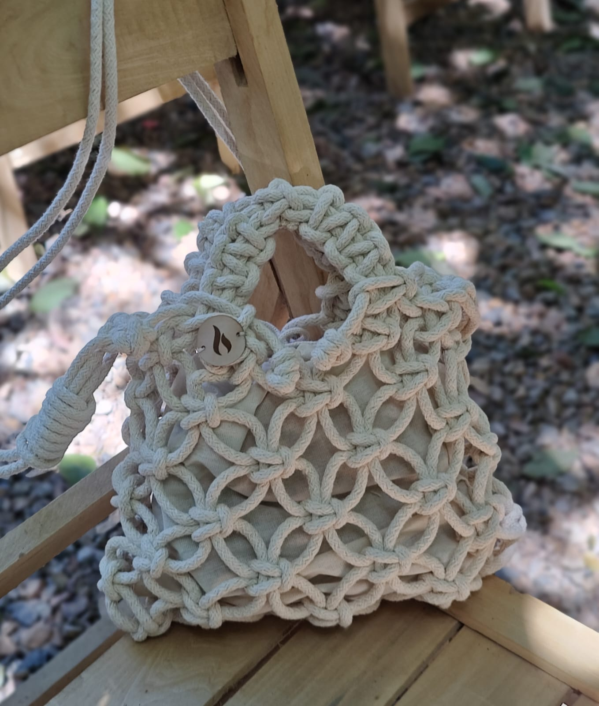
Trabajamos con hilos seleccionados por su textura, resistencia y forma de acompañar el uso diario.
Cada cartera nace a partir de materiales nobles,
elegidos con criterio.
Menos pasos visibles, más foco en lo esencial:
piezas pensadas para durar.
Carteras creadas con tiempo, paciencia y amor.

Con manija circular de madera.
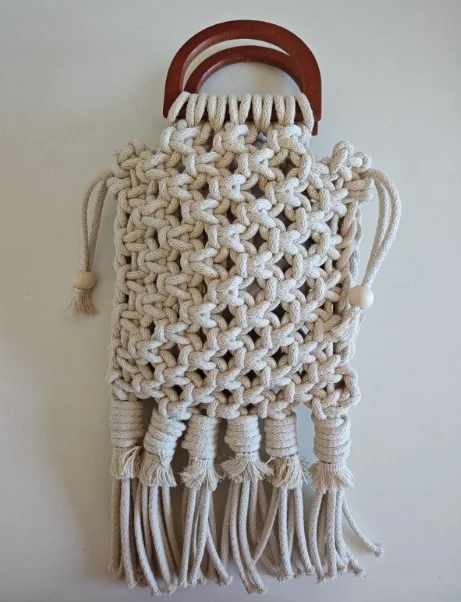
Terminación en flecos.
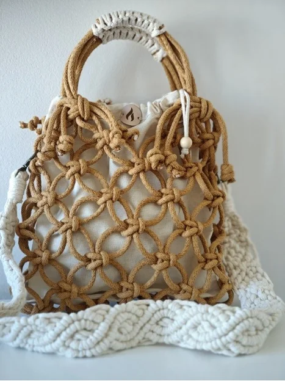
Tejida en cordón relleno de algodón.
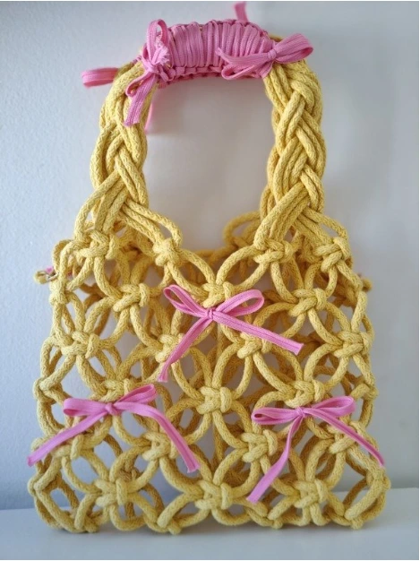
Con manija desmontable.
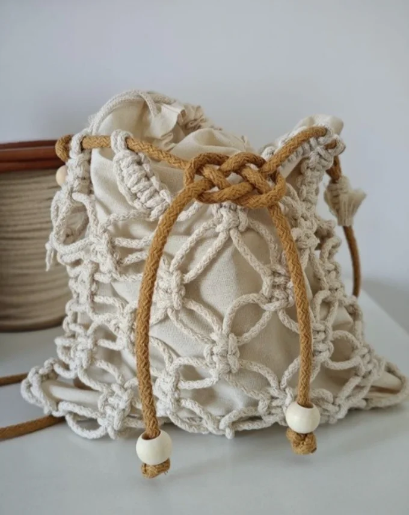
Con cierre a contratono en color camel.
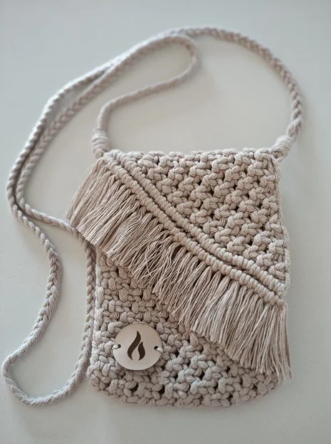
Diferentes largos de manija para llevar como bandolera o al hombro.
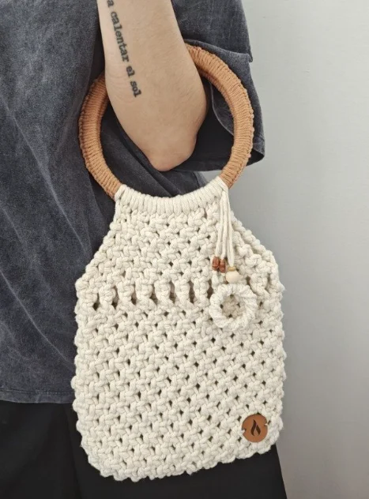
Manija de madera tejida con el mismo hilo.
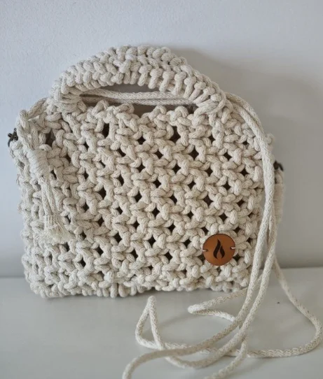
Con manijas incorporadas y correa desmontable.
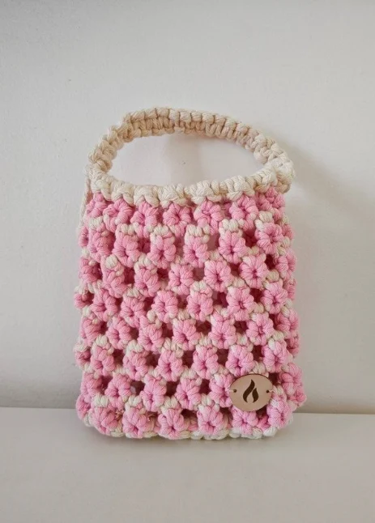
Realizada en hilo de algodón crudo y rosado.
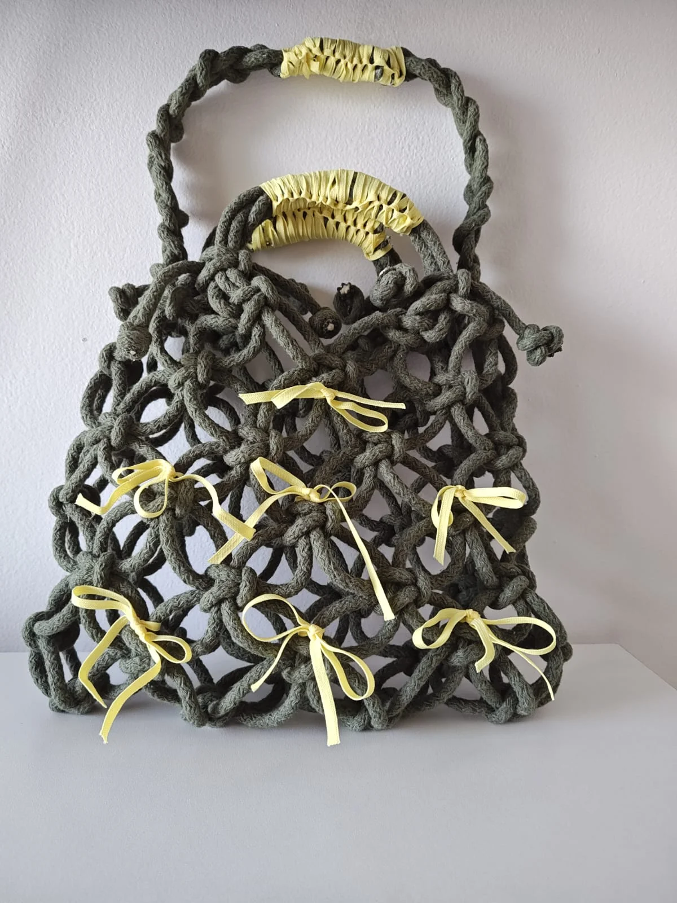
Doble manija, para llevarla como más te guste.
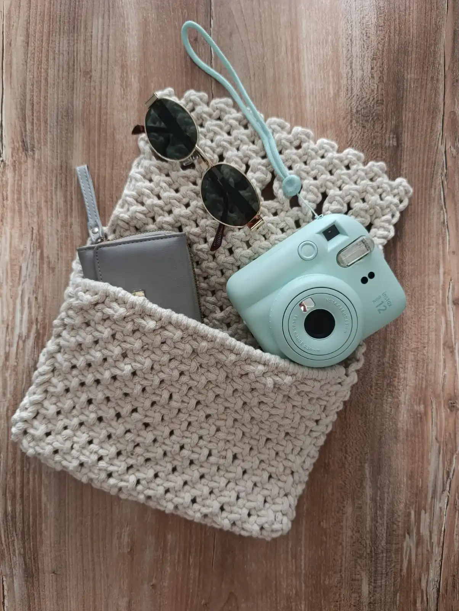
Cartera en macramé con soga de algodón.
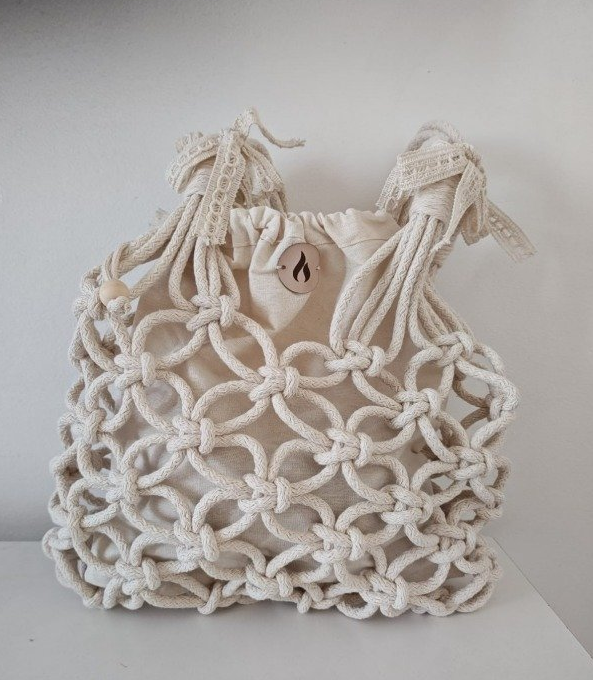
Con soga de algodón de 7 mm.
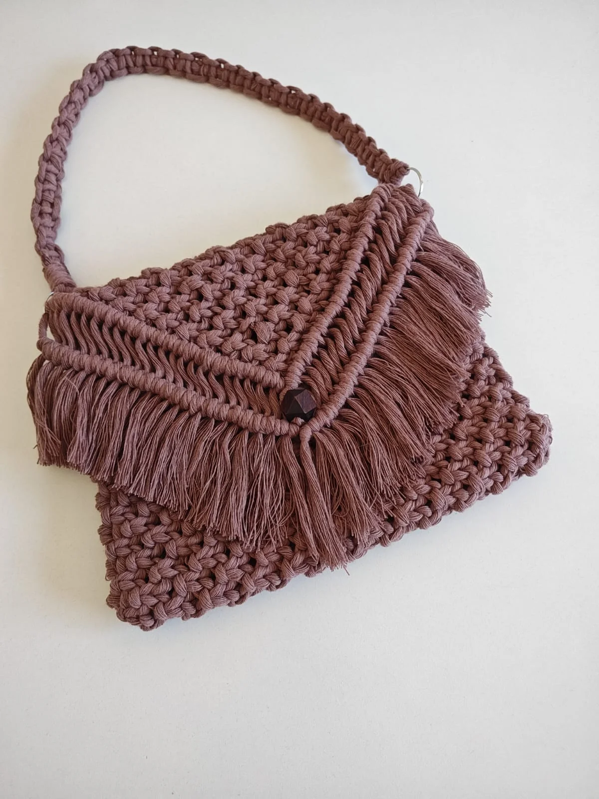
Con terminación en flecos y botón de madera lustrado.
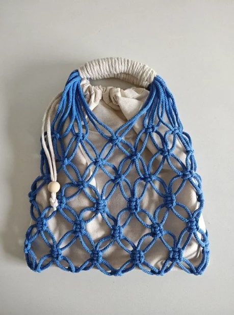
Cartera de mano hecha en hilo de algodón azul.